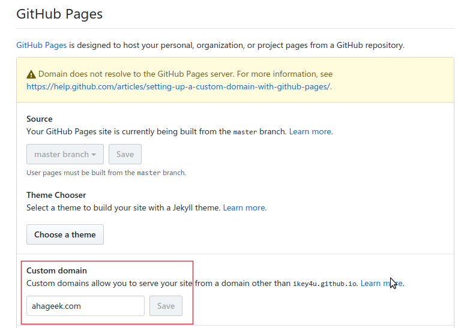
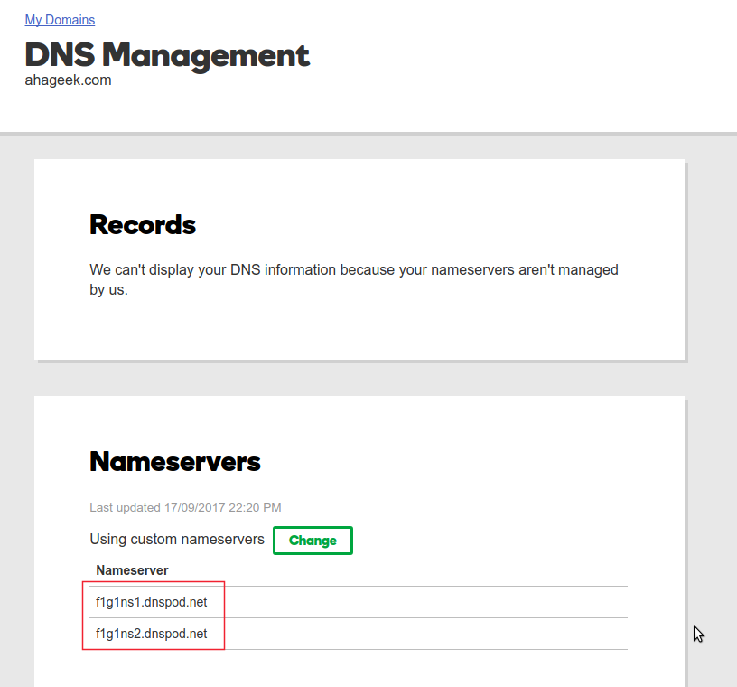
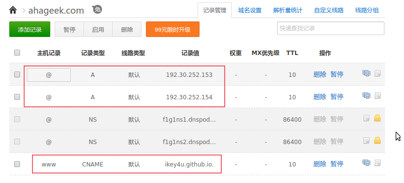

ikey4u[DOT]com 这个域名前后用了三年,三年前的初衷是 I keygen for you,想做一个软件破解的相关网站.但是后来, 由于一些原因,没有做,就暂时弄成了自己的博客域名,一方面是因为没有想到自己喜欢的域名, 另一方面是懒得动弹去弄着东西,就这么一直用下去了.
而这个月中旬,上面那个域名到期了,因此趁着周末顺便换了个域名,新域名为 www.ahageek.com, 这个域名会一直用下去.
周日中午和朋友吃过饭,就回寝室了,下午休息了一会儿, 起来后买了张晚上五点半的猿族崛起电影票,然后回到寝室继续自己的应用程序 The Life的开发,写代码写着写着,突然想到中午买的四弦琴(尤克里里), 于是说上网找一下教程,让它先下载这,我好继续写代码.
翻到知乎上,有人说在博客上放了个教程,顺着点开看到了域名,很喜欢那个域名, 突然就想到了自己喜欢的新域名 ahanerd.com 或者 ahageek.com,于是赶紧上狗爹上查了一下, 两个域名都有诶!这是好事,然而尴尬症犯了,用哪个好呢?
纠结在到底是要 nerd 还是要 geek,其实都听喜欢,但是总得选择一个用, 这个东西我足足纠结了一个小时,上网查 nerd 和 geek 的区别,看各种 differences ..., 看了好多文章,但是也没有个所以然,一张比较清晰的图区别如下:

但是,仍然做不了如何选择.....尬了一脸...
最后是如何做决定的呢,感觉 geek 中间的两个 ee 比较好看吧...
然后就在狗爹上买了...
如果哪位小伙伴想入手 ahanerd.com 赶紧哦,可以加个右链,感觉这两个域名比较配,哈哈...
下面简单记录一下自定义域名与 github 的关联操作.
当你注册 github 后,github 会提供给你一个二级域名,加入你注册的 github 用户名为haha, 那么你的二级域名就是 haha.github.com.为了关联一个自定义域名可以这么操作. 进入自己的二级域名仓库下面的 settings 中,然后找到 Github Pages 中的 Custom domain 来输入自己的域名, 如下所示:
我不确定该操作是否会在仓库下面建立一个 CNAME 文件,如果没有, 你需要自己到仓库下面建立一个名字为 CNAME 的文件,然后输入自己的域名, 注意没有 www,比如我只需要输入 ahageek.com 即可.
我是在狗爹那里购买的,因此以狗爹为例,进入自己的域名管理界面,修改 nameserver,如下图所示:
这里我们不用狗爹自己的域名解析服务,而使用国内的 dnspod,这样速度会快些,因为某些政策原因, 狗爹间歇性死亡...,接下来说 dnspod 的设置.
登陆 dnspod,添加一个域名,按照下图设置:
注意其中的记录为 CNAME 的记录值需要修改为你自己的二级域名. 这样修改完成后,大约十几分钟就可以完事儿,再访问 www.ahageek.com 就可以访问你的 github页面了.
域名更换后,原来的文章里面有很多 ikey4u.com 的链接,打开时会导致访问失败,需要替换为ahageek.com, OK,让我们祭出我们的 SHELL 大法,一条命令搞定:
------➢ ⚔ $ find ./ -type f -exec sed -i -e 's/ikey4u.com/ahageek.com/g' {} \;